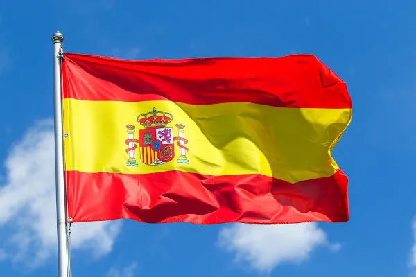
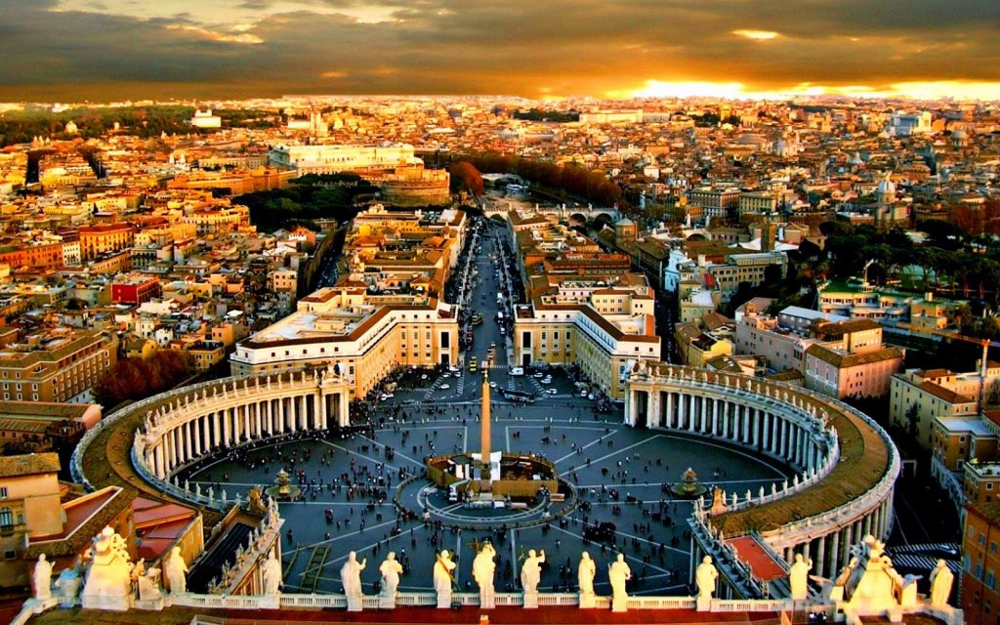
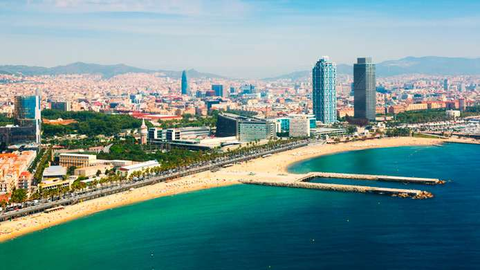

A Espanha, uma nação rica em história e cultura, cativa visitantes com sua diversidade impressionante. Das majestosas montanhas dos Pirenéus às ensolaradas praias mediterrâneas, o país oferece paisagens de tirar o fôlego. Suas cidades vibrantes, como Madrid, Barcelona e Sevilha, exibem uma arquitetura deslumbrante, desde os palácios reais até as obras-primas modernistas de Gaudí. Além disso, a Espanha é famosa por sua rica tradição culinária, com pratos icônicos como paella, tapas e jamón serrano, que atraem gastrônomos de todo o mundo.
Além de seu apelo estético e gastronômico, a Espanha também é um caldeirão cultural, refletindo influências árabes, judaicas e romanas. Festivais vibrantes, como a Feria de Abril em Sevilha e o Carnaval de Santa Cruz de Tenerife, celebram essa diversidade cultural de maneira exuberante. Além disso, a Espanha é o lar de uma das tradições mais famosas do mundo: a dança flamenca, uma expressão apaixonada de música e movimento que ecoa em tablados e festivais por todo o país.
Embora seja conhecida por sua rica herança cultural e paisagens deslumbrantes, a Espanha também enfrenta desafios contemporâneos. Questões como desemprego, descentralização política e preservação ambiental estão entre os desafios que o país enfrenta. No entanto, a resiliência e o espírito vibrante do povo espanhol continuam a moldar seu destino, enquanto a nação avança para o futuro com uma mistura única de tradição e inovação.
Imagens relacionadas:
  